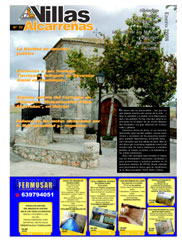

10. Ley de Desarrollo Sostenible del Medio Rural: una herramienta a nuestra disposición

Descargar el número 10
del periódico Villas Alcarreñas
(Editorial 10) Enero 2008
El objetivo de la Ley de Desarrollo Sostenible del Medio Rural es el mantenimiento de la población rural y la mejora de la calidad de vida y renta de sus habitantes.
Presentada recientemente en Sigüenza por la propia Ministra de Agricultura, Pesca y Alimentación, Elena Espinosa, la Ley destaca la importancia que en el conjunto del Estado tiene el medio rural, al que pertenece el 90 por ciento del territorio y más del 90% por ciento de los municipios, así como el 35 por ciento de la población, lo que equivale a más de 14 millones de personas.
La nueva Ley va a permitir establecer políticas de carácter horizontal en Desarrollo Rural en materias como educación, cultura, sanidad, vivienda, transportes, comunicación entre territorios y seguridad en el medio rural entre otras. También pretende lograr un alto nivel de calidad ambiental en el medio rural, previniendo el deterioro del patrimonio natural, favoreciendo la biodiversidad o facilitando, en su caso, su recuperación, y propiciando una mejor planificación de los recursos naturales.
La nueva Ley pone especial énfasis en el desarrollo de colectivos considerados prioritarios, propiciando la incorporación de activos rurales jóvenes que permitan el mantenimiento de la población, a la vez que fomenta la igualdad y la promoción de la mujer.
También es un instrumento importante en su contenido es el contrato territorial, que permite una relación contractual entre las administraciones públicas y los titulares de las explotaciones agrarias, para orientar e incentivar su actividad en beneficio de un desarrollo sostenible.
Para establecer la debida coordinación de las políticas rurales, crea un Consejo para el Medio Rural que integra a la Administración central, las Comunidades Autónomas y las Entidades Locales, estableciendo también entre sus instrumentos, una Mesa de Asociaciones de Desarrollo Rural, destinada a canalizar las demandas de estos colectivos, con representantes en todos los puntos del territorio (Redes de desarrollo rural, Organizaciones Profesionales Agrarias, Confederación de Cooperativas, ecologistas, etc).
La Ley contempla un tratamiento diferencial con los territorios, buscando la cohesión de los mismos y pretende alcanzar unos elevados niveles de concertación con las Comunidades Autónomas que, en definitiva, serán gestoras del desarrollo de muchas de las medidas del Programa para el Desarrollo Rural.
El año que ahora comienza abre un futuro esperanzador para el medio rural. Sin duda hablaremos y mucho de esta nueva Ley, que debe erigirse en herramienta principal para nuestro desarrollo y progreso.